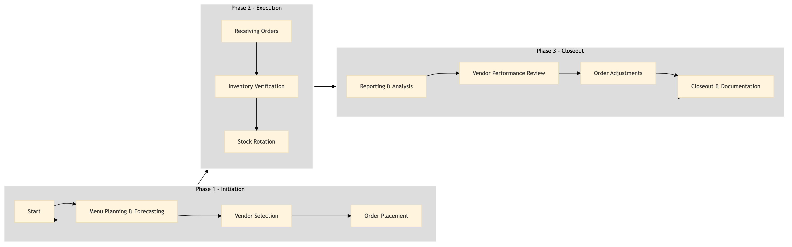

| Role | Steps |
|---|---|
| Executive Chef | 1.1 |
| Purchasing Manager | 1.2 1.3 3.1 3.2 3.3 3.4 |
| Kitchen Staff | 2.1 2.2 2.3 |
| Step | Name | Role | System | Input | Output | KPI | Dec? | Exc? | Pain Point / Risk |
|---|---|---|---|---|---|---|---|---|---|
| 1.1 | Menu Planning & Forecasting | Executive Chef | Oracle OPERA Cloud | Weekly menu plan | Forecasted inventory needs | Less than 2 hours for forecasting | N | Y | Inaccurate forecasts leading to over or understocking |
| 1.2 | Vendor Selection | Purchasing Manager | Birchstreet Procurement | Forecasted inventory needs | Selected vendors list | Less than 4 hours for vendor selection | Y | N | High cost of ingredients |
| 1.3 | Order Placement | Purchasing Manager | Birchstreet Procurement, Oracle OPERA Cloud | Selected vendors list | Purchase orders | Less than 1 hour for order placement | N | Y | Ordering errors leading to delays |
| 2.1 | Receiving Orders | Kitchen Staff | Oracle OPERA Cloud, Honeywell INNCOM | Delivered orders | Inventory adjustments | Less than 30 minutes for receiving per order | Y | N | Damaged or incorrect items received |
| 2.2 | Inventory Verification | Kitchen Staff | Oracle OPERA Cloud | Received orders | Verified inventory records | Less than 1 hour for verification | N | Y | Inventory discrepancies |
| 2.3 | Stock Rotation | Kitchen Staff | Oracle OPERA Cloud | Verified inventory records | Updated stock levels | Less than 1 hour for rotation | N | Y | Expired or spoiled items |
| 3.1 | Reporting & Analysis | Purchasing Manager | Oracle OPERA Cloud, Microsoft Power BI | Inventory data | Purchase reports | Less than 2 hours for reporting | N | Y | Lack of visibility into inventory trends |
| 3.2 | Vendor Performance Review | Purchasing Manager | Birchstreet Procurement | Purchase reports | Vendor performance evaluations | Less than 1 hour for review | Y | N | Inconsistent vendor quality |
| 3.3 | Order Adjustments | Purchasing Manager | Birchstreet Procurement, Oracle OPERA Cloud | Vendor performance evaluations | Adjusted purchase orders | Less than 1 hour for adjustments | N | Y | Difficulty in managing multiple vendors |
| 3.4 | Closeout & Documentation | Purchasing Manager | Oracle OPERA Cloud, Birchstreet Procurement | Adjusted purchase orders | Closed purchase cycle documentation | Less than 1 hour for closeout | N | Y | Incomplete or inaccurate documentation |
The Food Purchasing & Receiving process at a Marriott full-service hotel involves ordering ingredients and managing inventory to ensure smooth kitchen operations.